One modern interface for Final Fantasy XI: thin glowing bars, one clean font everywhere, and every piece placed exactly where you like.
Burst window open — 6s left
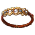
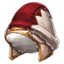
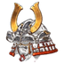
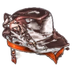
An illustration of the style — the real thing runs in game.
YunaUI replaces the game's target window, party and alliance lists and chat log with pieces that share one look — and puts the game's own back the moment you turn a piece off.
A glowing white line in a magenta band with the target's distance, what it's casting or readying, and its buffs and debuffs with time left.
When your party opens a chain, a fan shows your weapon skills that close it, best on top.
When a skillchain lands: the chain, the elements to burst with, and the time left.
Job tag in its role colour, HP, MP and TP. Members under 30% HP tremble and beat red. Click a job tag to fold their buffs.
See who it's hitting, and click any monster in the list to target it.
HP / MP / TP bars you can anchor together, plus a cast bar, EXP, gil and bag.
Your pet's HP / MP / TP, its ability timers and what it's fighting.
Recast timers for your abilities and spells.
Your 16 equipped items in HD, lighting up whenever you swap gear.
The meter formerly known as YunaDPS, with an enmity view.
Channel tabs, an optional combat log anchored beside it, timestamps and saved logs.
Every piece on a grid: drag and it snaps into line. Ready-made layouts plus five of your own. Stays on screen at any resolution.
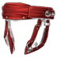
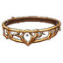
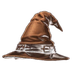
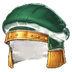
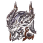
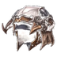
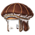
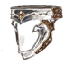
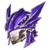
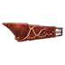
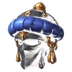
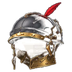
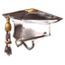
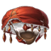
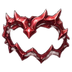
YunaUI is a VanaCore addon — VanaCore is the client the CatsEyeXI launcher starts. It does not run on plain Ashita.
VanaCore\addons\vanacore\, so you end up with VanaCore\addons\vanacore\yunaui\yunaui.lua./addon load yunaui vanacore. Add that line to your startup script to load it every time.VanaCore\addons\ashita\yunaui. Delete that folder (your settings are kept), unzip the new one as above, and change your startup line to /addon load yunaui vanacore. The old yunalink helper isn't needed anymore.VanaCore\addons\vanacore\, next to the yunaui folder.Everything else lives in the settings window.
/yui | Open or close the settings |
/yui edit | Edit Mode: move every piece |
/yui guide | Show the first-time guide again |
/yui lock · /yui unlock | Stop or allow dragging |
/yui reset | Back to the default settings |
/yui lang auto|ja|en | Interface language (Japanese by Tsukasa) |
/dps | The Damage Meter's own commands |
YunaUI is made by Yunas, with help and permission from these people and projects.
Japanese localization — Tsukasa (yunaui-jp).
Monster info — read from the mobdb addon's zone files (by Thorny, data from LandSandBoat) when mobdb is installed.
Enmity values from LandSandBoat. Cooldown reading follows the Timers addon. Includes GPL-3.0 code from XIUI.
Font — TeX Gyre Adventor (GUST Font License). Animated effects — FootageCrate.
Minimap — 2D maps restyled from remapster HD maps (spalose), the ffxi-maps pack and Vana'diel Atlas / ffxi-atlas.com, used with permission; 3D zone shapes from LandSandBoat's xiNavmeshOBJs; map table and floor reading after boussole by loonsies. FINAL FANTASY XI map art © SQUARE ENIX.
Voice — the Amy voice for Piper (rhasspy/piper-voices). Sounds — Pixabay creators Yodguard, juniorsoundays, Sdanezis, SoundShelfStudio and Universfield; all others made for YunaUI.
Job hats and buff icons redrawn for YunaUI.
Building on YunaUI? Keep the NOTICE file and credit it in your README: Based on YunaUI by Yunas - https://github.com/YunasXI/yunaui